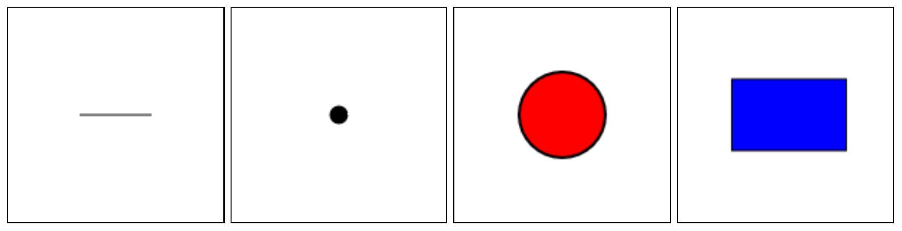

MSc in Cybersecurity - Sapienza Università di Roma
Riccardo Tuzzolino
Statistics is the science concerned with developing and studying methods for collecting, analyzing, interpreting and presenting empirical data [1]. Statistics holds a central position in almost every field, including industry, commerce, trade, physics, chemistry, economics, mathematics, biology, botany, psychology, astronomy, etc., so the applications of statistics are very wide [2]. The difference between Descriptive and Inferential Statistics is essentially that descriptive statistics state facts and proven outcomes from a population, whereas inferential statistics analyze samplings to make predictions about larger populations [3].
A population is the collection of all items of interest to our study. A sample is a subset of the population. A variable refers to a grouping of several characteristics. Attributes are those characteristics. A variable's attributes determine its level of measurement. There are four possible levels of measurement: nominal, ordinal, interval, and ratio [4]. A Dataset is a set or collection of data. This set is normally presented in a tabular pattern. Every column describes a particular variable and each row corresponds to a given member of the dataset [5].
There are two primary types of sampling methods [6]:
- Probability sampling: simple random sample, systematic sample, stratified sample, clustre sample.
- Non-probability sampling: convenience sample, purposive sample, snowball sample, quota sample.
Experimental design is the process of planning a study to meet specified objectives. Planning an experiment properly is very important in order to ensure that the right type of data and a sufficient sample size and power are available to answer the research questions of interest as clearly and efficiently as possible. Three of the more widely used experimental designs are the completely randomized design, the randomized block design, and the factorial design [7].
...
JavaScript code:
function drawLine() {
var canvas = document.getElementById('line');
var context = canvas.getContext('2d');
if (canvas.getContext) {
var X = canvas.width / 3;
var Y = canvas.height / 2;
context.beginPath();
context.moveTo(X, Y);
context.lineTo(X+50, Y);
context.strokeStyle = 'black';
context.stroke();
context.lineWidth = 5;
}
}
function drawPoint() {
var canvas = document.getElementById('point');
var context = canvas.getContext('2d');
if (canvas.getContext) {
var X = canvas.width / 2;
var Y = canvas.height / 2;
var R = 5;
context.beginPath();
context.arc(X, Y, R, 0, 2 * Math.PI);
context.lineWidth = 3;
context.fillStyle = 'black';
context.strokeStyle = 'black';
context.fill();
context.stroke();
}
}
function drawCircle() {
var canvas = document.getElementById('circle');
var context = canvas.getContext('2d');
if (canvas.getContext) {
var X = canvas.width / 2;
var Y = canvas.height / 2;
var R = 30;
context.beginPath();
context.arc(X, Y, R, 0, 2 * Math.PI);
context.lineWidth = 2;
context.fillStyle = "red";
context.fill();
context.strokeStyle = "black";
context.stroke();
}
}
function drawRectangle() {
var canvas = document.getElementById('rectangle');
var context = canvas.getContext('2d');
if (canvas.getContext) {
var X = canvas.width / 4;
var Y = canvas.height / 3;
context.beginPath();
context.rect(X, Y, 80, 50);
context.fillStyle = "blue";
context.fill();
context.strokeStyle = "black";
context.stroke();
}
}
drawLine();
drawPoint();
drawCircle();
drawRectangle();
Output:
[1] https://www.stat.uci.edu/what-is-statistics/
[2] https://www.emathzone.com/tutorials/basic-statistics/importance-of-statistics-in-different-fields.html
[3] https://onlinedegrees.bradley.edu/blog/whats-the-difference-between-descriptive-and-inferential-statistics/
[4] https://pressbooks.bccampus.ca/researchmethods/chapter/complexities-in-measurement/
[5] https://byjus.com/maths/data-sets/
[6] https://www.scribbr.com/methodology/sampling-methods/
[7] https://www.britannica.com/science/statistics/Experimental-design